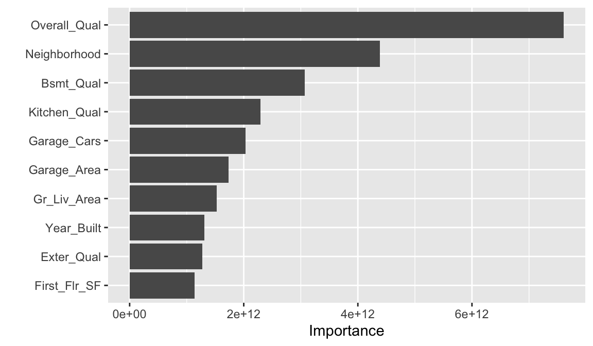

28 Lesson 7c: Model evaluation & selection
The last couple of lessons gave you a good introduction to building predictive models using the tidymodels construct. This lesson is going to go deeper into the idea of model evaluation & selection. We’ll discuss how to incorporate cross-validation procedures to give you a more robust assessment of model performance. We’ll also discuss the concept of hyperparameter tuning, the bias-variance tradeoff, and how to implement a tuning strategy to find a model the maximizes generalizability.
28.1 Learning objectives
By the end of this lesson you will be able to:
- Perform cross-validation procedures for more robust model performance assessment.
- Execute hyperparameter tuning to find optimal model parameter settings.
28.2 Prerequisites
For this lesson we’ll use several packages provided via tidymodels and we’ll use the ames housing data.
Let’s go ahead and create our train-test split:
28.3 Resampling & cross-validation
In the previous lessons we split our data into training and testing sets and we assessed the performance of our model on the test set. Unfortunately, there are a few pitfalls to this approach:
- If our dataset is small, a single test set may not provide realistic expectations of our model’s performance on unseen data.
- A single test set does not provide us any insight on variability of our model’s performance.
- Using our test set to drive our model building process can bias our results via data leakage.
Resampling methods provide an alternative approach by allowing us to repeatedly fit a model of interest to parts of the training data and test its performance on other parts of the training data.

Figure 28.1: Illustration of resampling.
This allows us to train and validate our model entirely on the training data and not touch the test data until we have selected a final “optimal” model.
The two most commonly used resampling methods include k-fold cross-validation and bootstrap sampling. This lesson focuses on using k-fold cross-validation.
28.4 K-fold cross-validation
Cross-validation consists of repeating the procedure such that the training and testing sets are different each time. Generalization performance metrics are collected for each repetition and then aggregated. As a result we can get an estimate of the variability of the model’s generalization performance.
k-fold cross-validation (aka k-fold CV) is a resampling method that randomly divides the training data into k groups (aka folds) of approximately equal size.
Figure 28.2: Illustration of k-fold sampling across a data sets index.
The model is fit on \(k-1\) folds and then the remaining fold is used to compute model performance. This procedure is repeated k times; each time, a different fold is treated as the validation set. This process results in k estimates of the generalization error (say \(\epsilon_1, \epsilon_2, \dots, \epsilon_k\)). Thus, the k-fold CV estimate is computed by averaging the k test errors, providing us with an approximation of the error we might expect on unseen data.

Figure 28.3: Illustration of a 5-fold cross validation procedure.
In practice, one typically uses k=5 or k=10. There is no formal rule as to the size of k; however, as k gets larger, the difference between the estimated performance and the true performance to be seen on the test set will decrease.
To implement k-fold CV we first make a resampling object. In this example we we create a 10-fold resampling object.
We can now create our random forest model object and create a workflow object as we did in the previous lesson. To fit our model across our 10-folds we just use fit_resamples().
# create our random forest model object
rf_mod <- rand_forest() %>%
set_mode('regression')
# add model object and our formula spec to a workflow object
rf_wflow <- workflow() %>%
add_model(rf_mod) %>%
add_formula(Sale_Price ~ .)
# fit our model across the 10-fold CV
rf_fit_cv <- rf_wflow %>%
fit_resamples(kfolds)We can then get our average 10-fold cross validation error with collect_metrics():
collect_metrics(rf_fit_cv)
## # A tibble: 2 × 6
## .metric .estimator mean n std_err .config
## <chr> <chr> <dbl> <int> <dbl> <chr>
## 1 rmse standard 25978. 10 898. Preproce…
## 2 rsq standard 0.902 10 0.00787 Preproce…If we want to see the model evaluation metric (i.e. RMSE) for each fold we just need to unnest the rf_fit_cv object.
We have not discussed nested data frames but you can read about them here
rf_fit_cv %>%
unnest(.metrics) %>%
filter(.metric == 'rmse')
## # A tibble: 10 × 7
## splits id .metric .estimator .estimate
## <list> <chr> <chr> <chr> <dbl>
## 1 <split [1845/206]> Fold… rmse standard 26210.
## 2 <split [1846/205]> Fold… rmse standard 22089.
## 3 <split [1846/205]> Fold… rmse standard 30512.
## 4 <split [1846/205]> Fold… rmse standard 26106.
## 5 <split [1846/205]> Fold… rmse standard 25095.
## 6 <split [1846/205]> Fold… rmse standard 24337.
## 7 <split [1846/205]> Fold… rmse standard 23586.
## 8 <split [1846/205]> Fold… rmse standard 30650.
## 9 <split [1846/205]> Fold… rmse standard 27256.
## 10 <split [1846/205]> Fold… rmse standard 23935.
## # ℹ 2 more variables: .config <chr>, .notes <list>28.5 Hyperparameter tuning
Given two different models (blue line) to the same data (gray dots), which model do you prefer?
Figure 28.4: Between model A and B, which do you think is better?
The image above illustrates the fact that prediction errors can be decomposed into two main subcomponents we care about:
- error due to “bias”
- error due to “variance”
28.5.1 Bias
Error due to bias is the difference between the expected (or average) prediction of our model and the correct value which we are trying to predict.
It measures how far off in general a model’s predictions are from the correct value, which provides a sense of how well a model can conform to the underlying structure of the data.
High bias models (i.e. generalized linear models) are rarely affected by the noise introduced by new unseen data
Figure 28.5: A biased polynomial model fit to a single data set does not capture the underlying non-linear, non-monotonic data structure (left). Models fit to 25 bootstrapped replicates of the data are underterred by the noise and generates similar, yet still biased, predictions (right).
28.5.2 Variance
Error due to variance is the variability of a model prediction for a given data point.
Many models (e.g., k-nearest neighbor, decision trees, gradient boosting machines) are very adaptable and offer extreme flexibility in the patterns that they can fit to. However, these models offer their own problems as they run the risk of overfitting to the training data.
Although you may achieve very good performance on your training data, the model will not automatically generalize well to unseen data.
Figure 28.6: A high variance k-nearest neighbor model fit to a single data set captures the underlying non-linear, non-monotonic data structure well but also overfits to individual data points (left). Models fit to 25 bootstrapped replicates of the data are deterred by the noise and generate highly variable predictions (right).
Many high performing models (i.e. random forests, gradient boosting machines, deep learning) are very flexible in the patterns they can conform to due to the many hyperparameters they have. However, this also means they are prone to overfitting (aka can have high variance error).
28.5.3 Hyperparameters
Hyperparameters (aka tuning parameters) are the “knobs to twiddle” to control the complexity of machine learning algorithms and, therefore, the bias-variance trade-off.
Some models have very few hyperparameters. For example in a K-nearest neighbor (KNN) model K (the number of neighbors) is the primary hyperparameter.
Figure 28.7: k-nearest neighbor model with differing values for k.
While other models such as gradient boosted machines (GBMs) and deep learning models can have many.
Hyperparameter tuning is the process of screening hyperparameter values (or combinations of hyperparameter values) to find a model that balances bias & variance so that the model generalizes well to unseen data.
Let’s illustrate by using decision trees. One of the key hyperparameters in decision trees is the depth of the tree.
This lesson does not dig into the decision tree algorithm but if you want to better understand the hyperparameters for decision trees you can read about them here
Say we wanted to assess what happens when we grow the decision tree 5 levels deep. We could do this manually:
# create our decision tree model object
dt_mod <- decision_tree(tree_depth = 5) %>%
set_mode('regression')
# add model object and our formula spec to a workflow object
dt_wflow <- workflow() %>%
add_model(dt_mod) %>%
add_formula(Sale_Price ~ .)
# fit our model across the 10-fold CV
dt_fit_cv <- dt_wflow %>%
fit_resamples(kfolds)
# assess results
collect_metrics(dt_fit_cv)
## # A tibble: 2 × 6
## .metric .estimator mean n std_err .config
## <chr> <chr> <dbl> <int> <dbl> <chr>
## 1 rmse standard 39175. 10 1382. Preproce…
## 2 rsq standard 0.758 10 0.0156 Preproce…But what if we wanted to assess and compare different tree_depth values. Moreover, decision trees have another key hyperparameter cost_complexity. So what if we wanted to assess a few values of that hyperaparameter in combination with tree_depth? Adjusting these values manually would be painstakingly burdensome.
Again, don’t worry if you have no idea what these hyperparameters mean. Just realize we want to toggle these values to try find an optimal model.
28.5.4 Full cartesian grid search
For this we could use a full cartesian grid search. A full cartesian grid search takes the values provided for each hyperparameter and assesses every combination.
First, let’s rebuild our decision tree model object; however, this time we’ll create a model specification that identifies which hyperparameters we plan to tune.
dt_mod <- decision_tree(
cost_complexity = tune(),
tree_depth = tune()
) %>%
set_engine("rpart") %>%
set_mode("regression")
Think of tune() here as a placeholder. After the tuning
process, we will select a single numeric value for each of these
hyperparameters. For now, we specify our parsnip model object and
identify the hyperparameters we will tune().
Next, we create our tuning grid of hyperparameter values we want to assess. The function grid_regular() is from the dials package. It chooses sensible values to try for each hyperparameter; here, we asked for 3 of each. Since we have two to tune, grid_regular() returns \(3 \times 3 = 9\) different possible tuning combinations to try.
A full cartesian grid search can explode as you add more
hyperparameters and values to assess. When this happens its best to
start using grid_random or
grid_latin_hypercube to reduce combinatorial explosion and
computation time.
dt_grid <- grid_regular(
cost_complexity(),
tree_depth(),
levels = 3
)
dt_grid
## # A tibble: 9 × 2
## cost_complexity tree_depth
## <dbl> <int>
## 1 0.0000000001 1
## 2 0.00000316 1
## 3 0.1 1
## 4 0.0000000001 8
## 5 0.00000316 8
## 6 0.1 8
## 7 0.0000000001 15
## 8 0.00000316 15
## 9 0.1 15Now that we have our tuning grid and model object defined we can:
- Create our k-fold CV object (5-fold in this example),
- Add our model to a workflow object and specify the formula,
- Apply
tune_grid()to execute our hyperparameter tuning.
# 5-fold instead of 10-fold to reduce computation time
kfolds <- vfold_cv(train, v = 5)
# add model object and our formula spec to a workflow object
dt_wflow <- workflow() %>%
add_model(dt_mod) %>%
add_formula(Sale_Price ~ .)
# fit our model across the 5-fold CV
dt_grid_search <- dt_wflow %>%
tune_grid(
resamples = kfolds,
grid = dt_grid
)We can check out the hyperparameter combinations that resulted in the best model performance with show_best(). Here we look at the top 5 models and we can see that the top 4 all tend to perform very similarly. It appears that deeper trees with smaller cost complexity factor tend to perform best on this data set.
dt_grid_search %>%
show_best(metric = 'rmse')
## # A tibble: 5 × 8
## cost_complexity tree_depth .metric .estimator mean
## <dbl> <int> <chr> <chr> <dbl>
## 1 0.0000000001 8 rmse standard 36638.
## 2 0.00000316 8 rmse standard 36638.
## 3 0.0000000001 15 rmse standard 36703.
## 4 0.00000316 15 rmse standard 36703.
## 5 0.1 8 rmse standard 51944.
## # ℹ 3 more variables: n <int>, std_err <dbl>,
## # .config <chr>28.6 Finalizing our model
If we are satisfied with our results and we want to use the best hyperparameter values for our best decision tree model, we can select it with select_best():
# select best model based on RMSE metric
best_tree <- dt_grid_search %>%
select_best(metric = 'rmse')
best_tree
## # A tibble: 1 × 3
## cost_complexity tree_depth .config
## <dbl> <int> <chr>
## 1 0.0000000001 8 Preprocessor1_Model4We can then update (or “finalize”) our workflow object dt_wflow with the values from select_best().
Finally, let’s fit this final model to the training data and use our test data to estimate the model performance we expect to see with new data. We can use the function last_fit() with our finalized model; this function fits the finalized model on the full training data set and evaluates the finalized model on the testing data.
We pass the initial train-test split object we created at the
beginning of this lesson to last_fit.
final_fit <- final_wflow %>%
last_fit(split)
final_fit %>%
collect_predictions() %>%
rmse(truth = Sale_Price, estimate = .pred)
## # A tibble: 1 × 3
## .metric .estimator .estimate
## <chr> <chr> <dbl>
## 1 rmse standard 34609.As we can see our test RMSE is less than our CV RMSE. This indicates that we did not overfit during our tuning procedure, which is a good thing.
Perhaps we would also like to understand what variables are important in this final model. We can use the vip package to estimate variable importance based on the model’s structure.

28.7 Exercises
Import the dataset blood_transfusion.csv:
- The column “Class” contains the target variable. Investigate this variable. Is this a regression or classification problem?
-
Why is it relevant to add a preprocessing step to standardize the
features? What
step_xxx()function would you use to do so? -
Perform a k-nearest neighbor model on this data with
neighbors = 10. Be sure to add a preprocessing step to standardize the features. - Perform a 5-fold cross validation with the above model workflow. What is your average CV score?
-
Now perform hyperparameter tuning to understand the effect of the
parameter
neighborson the model score. Assess 10 values forneighborsbetween the range of 1-100. Again, perform a 5-fold cross validation. Which hyperparameter value performed the best and what was the CV score?
28.8 Additional resources
This module provided a very high-level introduction to predictive modeling with tidymodels. To build on this knowledge you can find many great resources at https://www.tidymodels.org/.